Convex Polygon Detection using Linear Hough Transform
This project implements a convex polygon detector using the linear Hough Transform. In addition, it implements four notable filtering algorithms (Deriche, Otsu, non-maximum-suppression, hysteresis thresholding) as preprocessing steps to clean up the source image. Of note is the Deriche Filter, which implements gradient calculation and blurring through trivial manipulation of filter parameters.
Contents
The Problem
Given a bitmap image containing at-most one convex polygon, determine the shape, orientation and side-lengths of said polygon. The polygon could be solid or wireframe, hand-drawn or computer generated, and the input image may contain significant background noise.
Some example images may look like:
| 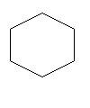 | 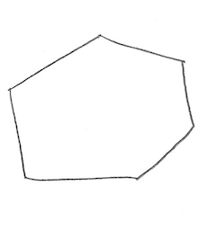 | 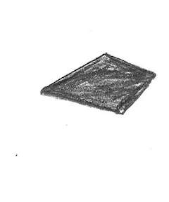 |
| image1.bmp | hexagon.bmp | diamond.bmp |
|---|
System Overview
Stage 1: Read Bitmap as Matrix
Stage 2: Deriche Blur Filter
Stage 3: Otsu's Thresholder
Stage 4: Deriche Gradient Filter
Stage 5: Hysteresis Thresholding
Stage 6: Hough Transform
Stage 7: Edge Count & Orientation
Examples
| image1.bmp | hexagon.bmp | diamond.bmp | |
|---|---|---|---|
Source |
|||
| ↓ | ↓ | ↓ | |
Read |
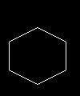 | 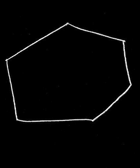 | 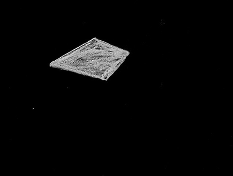 |
| ↓ | ↓ | ↓ | |
Blur |
 |
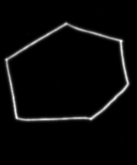 | 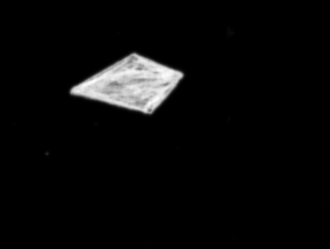 |
| ↓ | ↓ | ↓ | |
Otsu Threshold |
 |
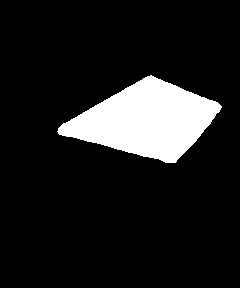 | |
| ↓ | ↓ | ↓ | |
X-Gradient |
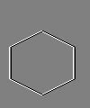 | 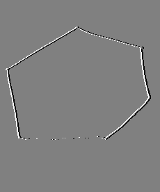 | 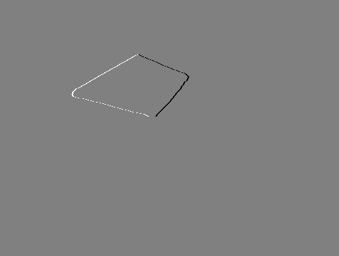 |
| ↓ | ↓ | ↓ | |
Y-Gradient |
 |
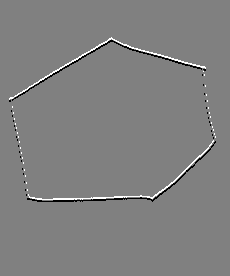 |  |
| ↓ | ↓ | ↓ | |
Gradient Magnitude |
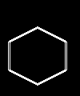 | 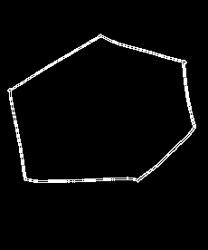 | 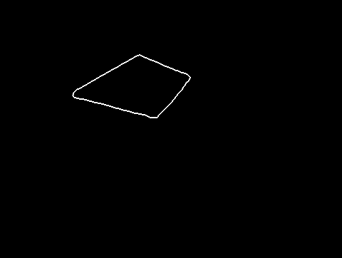 |
| ↓ | ↓ | ↓ | |
Hough Transform |
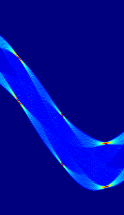 | 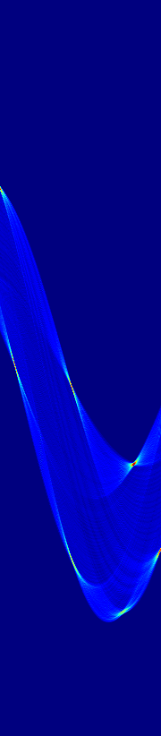 |
Instructions
© 2015–2018 Arjun. Verbatim copying and redistribution of this entire page are permitted provided this notice is preserved.